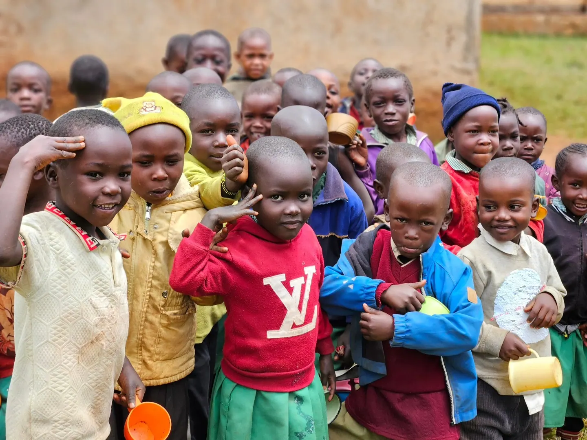

Photo gallery
Trans Nzoia County
Documenting our work across Kitale, Cherang'any and the wider Trans Nzoia region, 2024 to 2025.

Documenting our work across Kitale, Cherang'any and the wider Trans Nzoia region, 2024 to 2025.